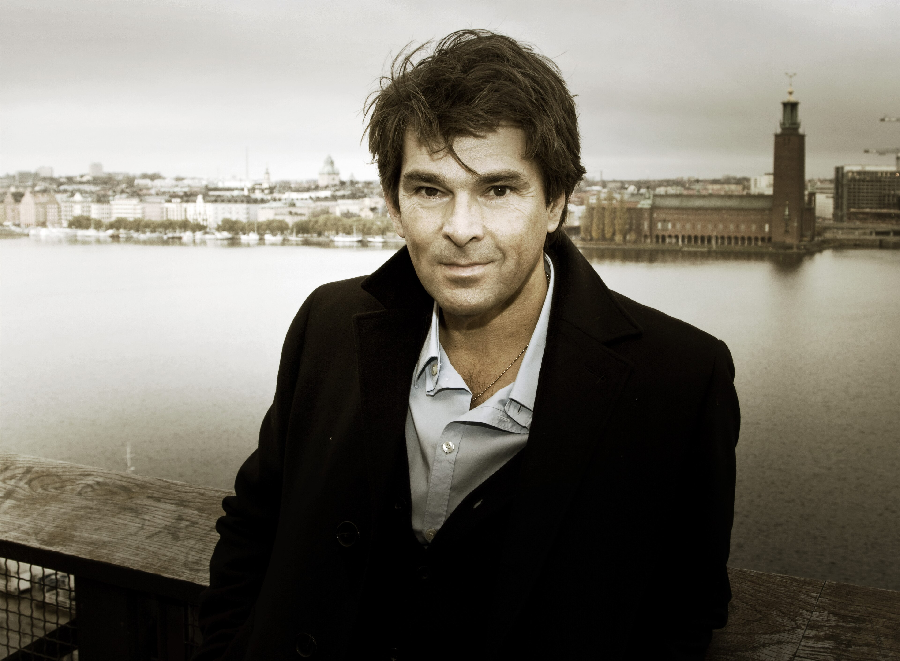

Niklas Strömstedt

Bo Anders Niklas Strömstedt, född 25 juli 1958 i Lund, är en svensk popsångare och låtskrivare.
Han är son till Bo och Margareta Strömstedt.
Några av Niklas Strömstedts mest kända låtar är "Sista morgonen" och "Om".
Han var även med och skrev "Tänd ett ljus" med Triad, och som medlem i gruppen GES tillsammans med Orup och Anders Glenmark, skrev han "När vi gräver guld i USA".
[2] Strömstedt har på senare år arbetat inom TV som programledare.[3]